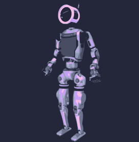
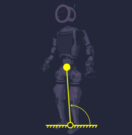
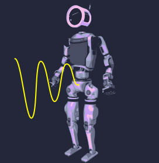
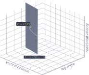
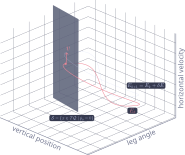
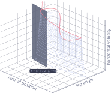
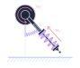
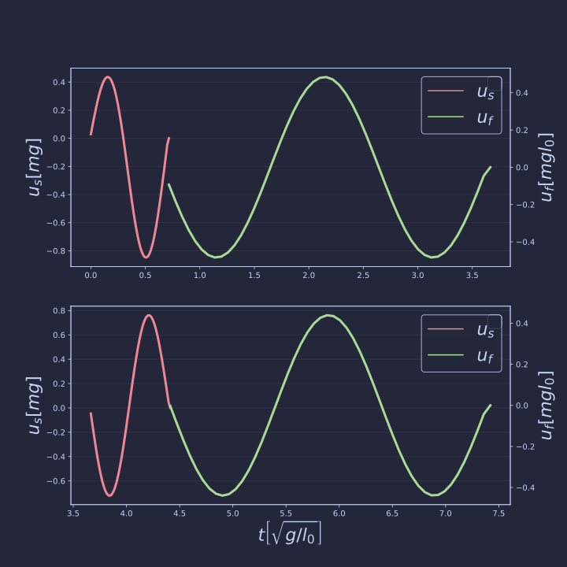

Leveraging Natural Dynamics
The surprisingly rich geometry of efficiently turning around
presentend by Gabin Lembrez



Context: the legged robot dilemma
- Online optimization using simple locomotion templates - lose dynamic effects (Jallet & al. 2023)
- stabilize a limit cycle found offline - limited to periodic motion (Westervelt & al. 2018)
- Is there a way to understand and achieve non-periodic whole-body efficient locomotion ?

A non-linear conservative robot
- Classical template for legged locomotion (Geyer & al. 2006)
- Assumption : massless leg
- Hybrid dynamics: $$ \left\{ \begin{matrix} \dot{x} = f_i(x) & x \in T\mathcal{Q} \\ x^+ = \Delta_i (x^-) & x^- \in \mathcal{S}_i \end{matrix} \right. $$



Poincaré section:
- surface $\mathcal{S}$ of dimension $n-1$ non-transverse to the flow $x(t)$
- Poincaré return map $$P:\mathcal{S}\rightarrow \mathcal{S}$$
- A periodic trajectory of the system is a fixed point of $P$



Continuation of a family of motion:
- There exist at least one periodic orbit in the neighbourhood of a periodic orbit (Raff & al. 2022)
- We can explore those orbits by taking small steps in the nullspace of $P(x) - x$
- The collection of fixed points in the Poincaré section is called a generator


Result :
- Family of periodic motions are connected regular structures called Natural Motion Manifolds (NMM)
- A NMM is fully described by a one dimension generator.
- NMMs can branch into different behaviours.
What about complex motion ?
- Let's do a u-turn while minimizing the energy required.
- We want to 'stick' to NMMs as much as possible
- Using the same continuation technique, we discover a transition NMM.

Actuators
- Actuators are placed in parallel to springs
- $u_f$ is active during flight
- $u_s$ is active during stance

Predictive control:
Hybrid MPC with terminal constraint on the generator $\Gamma$ of the desired motion
\[ \begin{align} \min_u &\quad \sum_{k=0}^N \| u_k \|_R^2 \\ \text{s.t.} &\quad \dot{x}_{k} = f(x_k,u_{k}) \\ & \quad e_i(x(t_i^-)) = 0 \\ & \quad x(t_i^+) = h_i(x(t_i^-)) \\ & \quad \Gamma(E(x_N)) = 0. \end{align} \]
Result:
- Excitation of the form $$ A \cos(\omega t + \phi) $$
- Small magnitude.
- Generalisation of the concept of mode in the non-linear case.
Result:
- We achieved non-periodic motion
- With minimal energy efficient by staying close to conservative 'modes' of locomotion
- Future work: systematic continuation of such periodic orbits for more complex non conservative mechanisms.